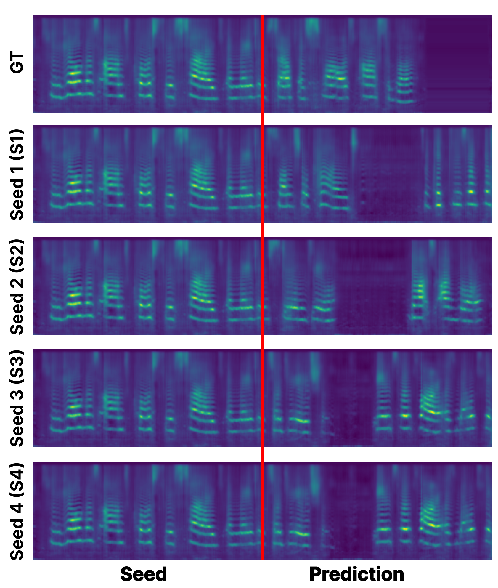
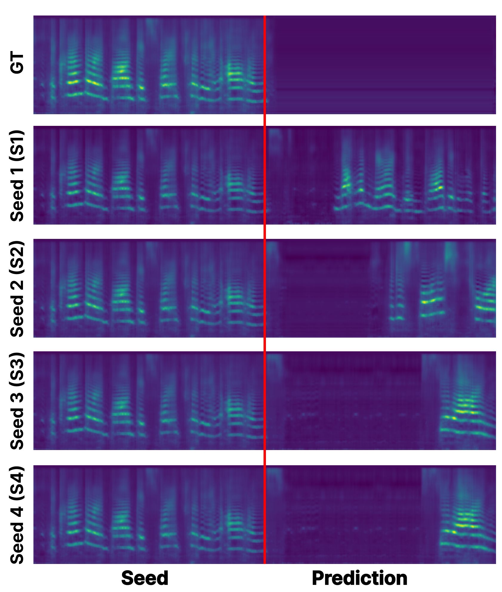
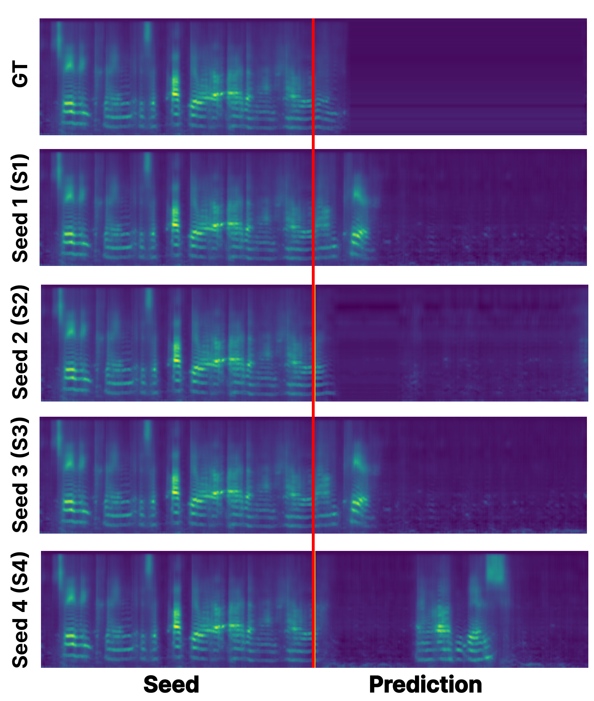
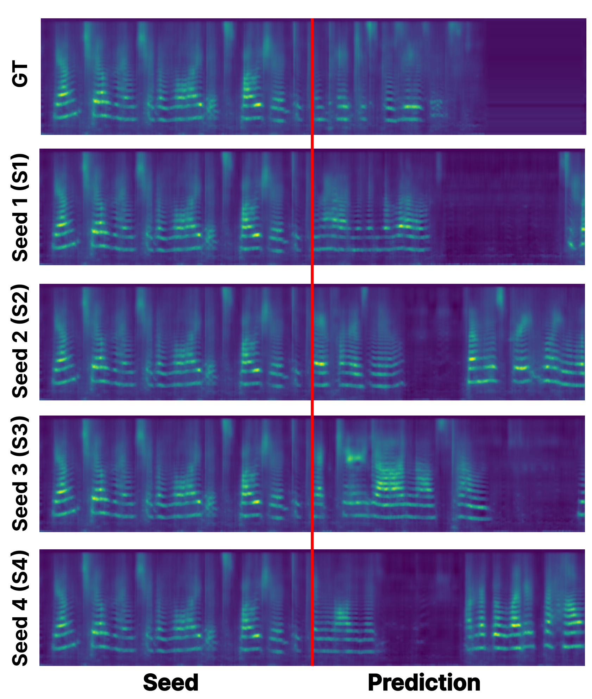
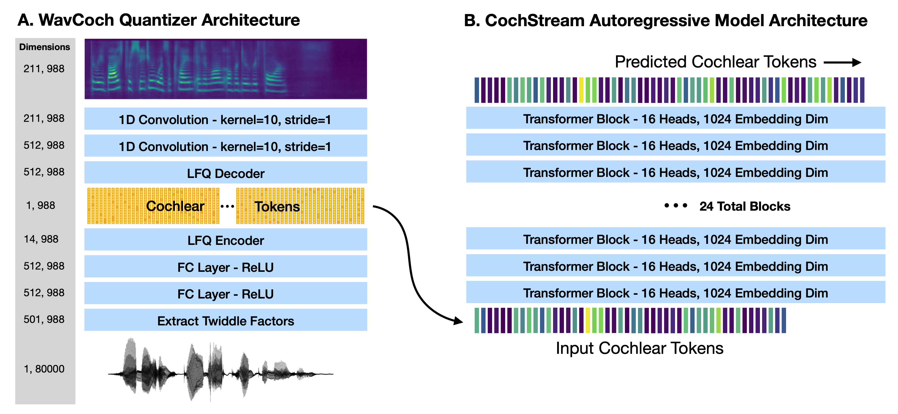
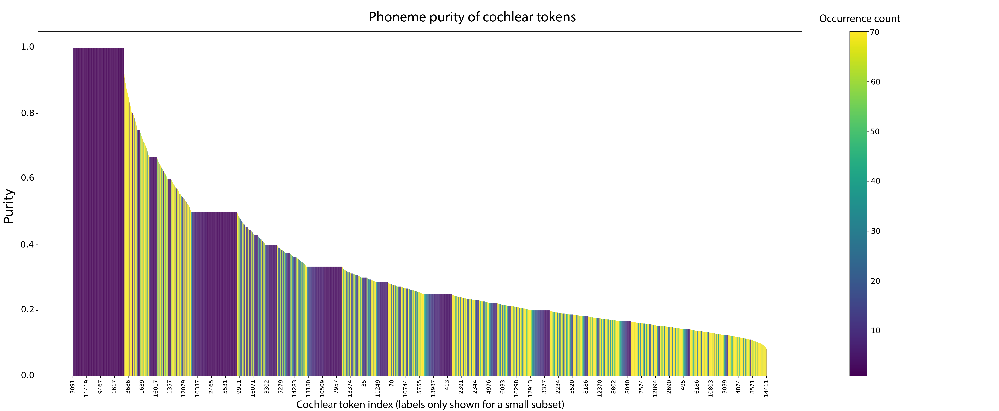
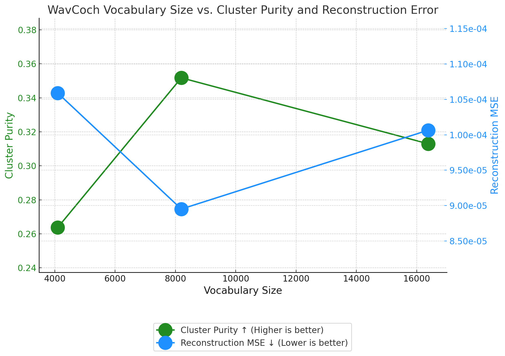

CochStream: Representing Speech Through Autoregressive Prediction of Cochlear Tokens
Anonymous Sumbission
We introduce a biologically-inspired model for encoding speech through an autoregressive prediction objective applied to input representations modeled after the human cochlea. Our modeling framework is inspired by the human auditory processing hierarchy. The first stage of our framework transforms the raw audio waveform to a time-frequency representation inspired by the human cochlea, with an intermediary step that effectively discretizes the audio representations (cochlear tokens). The second stage of our model learns a simple, yet powerful, autoregressive sequence model over the discretized audio input. We demonstrate that our model learns meaningful representations of phonemes and word identities, and state-of-the-art representations of lexical semantic similarity. In addition, our model shows competitive performance on several downstream audio tasks from the SUPERB benchmark. In addition to our model’s strong representational capabilities, we demonstrate our model's ability to generate continuations of audio at various temporal scales, which can be visualized in a cochleagram time-frequency space to provide insights into the model's predictions. Our model provides a novel framework for speech representation learning, aiming to advance the development of more human-like models that flexibly and efficiently handles a range of speech-based tasks.
Additional Rollouts
We provide additional rollouts generated by our model - CochStream to showcase its diverse generation capabilities. We visualize generations under various seeds for several samples from the TIMIT dataset, which are not present in the training data.
FCAU0 - SX137

MKJL0 - SX380

MGRT0 - SA1

FTLH0 - SX379

Rebuttal Figures
We provide additional figures to address the reviewer comments.
Figure 1

A. WavCoch Quantizer Architecture: First, the raw waveform (shape: [1,80000] for 5s of mono audio sampled at 16kHz) undergoes the Fourier Transform by computing Twiddle Factors [1]. These factors represent complex sinusoidal components that decompose the signal into its frequency spectrum. The Twiddle Factors are applied to the audio signal through a 1D convolution (window size 1,001 and hop length 80 samples) which transforms the signal into the time-frequency domain.
Second, each 5 ms temporal step of this time-frequency representation is fed into two fully-connected (FC) layers with ReLU nonlinearities (with 512 hidden units each).
Third, these embeddings are then passed through a 14-dimensional LFQ bottleneck [3], which effectively binarizes the representation. We read out the activations of this bottleneck as a 14-bit binary code which can be interpreted as one of 2^14 = 16,384 discrete tokens.
Fourth, the output of the LFQ bottleneck is then projected to a 211 dimensional output, through two 1-dimensional convolutional layers (kernel size 10 and stride 1), separated by ReLU nonlinearities. This output corresponds to the frequencies in the cochleagram representation [2] which it is supervised to match via L2 error.
Thus for every 5 seconds of audio, WavCoch extracts a sequence of 988 integers in the range [0, 16384) through the LFQ bottleneck, denoted as \textbf{cochlear tokens}, to feed into CochStream.
B. CochStream Autoregressive Model Architecture: The cochlear tokens obtained in WavCoch are passed to a GPT-style autoregressive Transformer [4], denoted as CochStream. We train two versions: CochStream-base (97M parameters), with 12 layers, 12 attention heads and an embedding size of 784 and CochStream-large (1.3B parameters) with 24 layers, 16 attention heads, and an embedding size of 2,048. Both models have a vocabulary size of 16,384. The CochStream model takes as input the cochlear token sequence produced by WavCoch and predicts the next token in the sequence. The context length is approximately 20s (4,096 tokens). We utilize a learned positional embedding and compute the cross-entropy loss between the predicted logits and the true next token in the sequence.
Figure 2

The plot investigates the vocabulary utilization rate in relation to the phoneme purity of each token. For each token, we define the purity as:
Purity = (Count of most associated phoneme for token i) / (total counts for token i)
Hence, the purity (on Figure 2’s y-axis) shows the purity for each cochlear token, whereas the color shows how many times a given token appears in the test set.
Figure 3

We train variants of WavCoch using a vocabulary size of 16384, 8192 and 4096
(14, 13 and 12 bit codes respectively) and report the reconstruction MSE and cluster
purity for each on the out of distribution TIMIT test set. The experiments
indicate that a slightly smaller vocabulary size of 8192 is best for out of distrution generalization.
Figure 4
We plot the cluster purity of the best version of WavCoch according to our ablation experiments.
We find that multiple tokens are typically associated with each phoneme, and many of them are exclusively associated with a single phoenem.
Notably, a large number of tokens are linked to the "sil" (silence) label, but we would like to clarify that this label includes any non-speech sound, not true silence.
We provide additional rollouts generated by our model - CochStream to showcase its diverse generation capabilities. We visualize generations under various seeds for several samples from the LibriSpeech test set and TIMIT test set, which are not present in the training data. We then invert the cochleagrams back to audio and generate a video of a speech continuation from a given conditioning sequence. We would like to emphasize that these are not cherry picked, but rather the first random generations we created, under a consecutive series of random generator seeds.
LibriSpeech test - 4077-13754-0013
LibriSpeech test - 237-126133-0000
LibriSpeech test - 237-126133-0000
TIMIT - SA1
TIMIT - SX385
Paper And Supplementary Revisions November 28, 2024